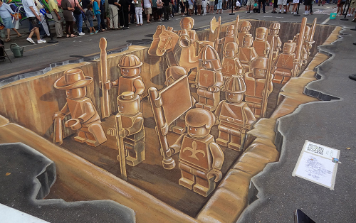
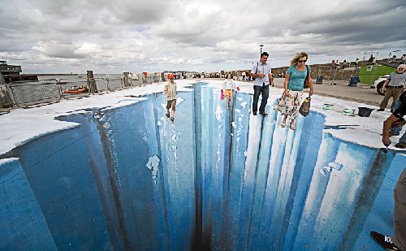
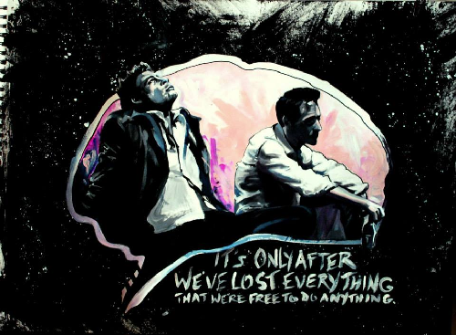
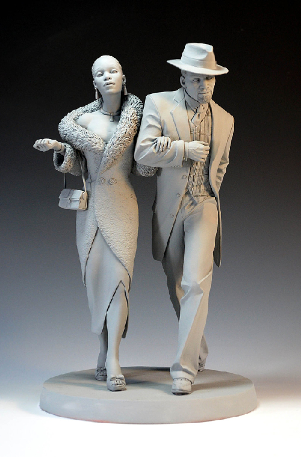
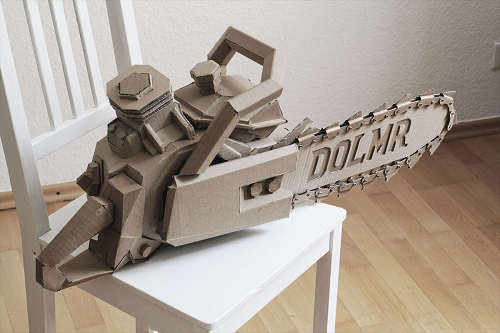

When Johnny Comes Marching Home Again!

Since I can remember, I was always playing with legos. Building the latest model my parents had gotten me, equiping them with extra features and creating imaginary scenarios and stories to play through with my friends.
As an homage to what I consider a huge influence for my creativity, I paid the city to allow me to paint an awe inspiring piece of 3D street art to hopefully inspire others creative juices using an image of the simple plastic pieces that inspired me when I was young.
Winter Wonderland

I've always wanted to visit the poles and walk on the frozen tundras that house the purest water on the planet. That, however, is a difficult dream to fund on an artists salary.
Over time as I grew more popular and may paychecks more stable, I was able to achieve that dream and what a sight it was. Hiking through the mostly untouched and millenia old land was a spiritual feeling like none I've ever had.
I painted this piece in a public place in the hopes that those who aren't as fortunate as I were able to catch a glimpse at the some of the rarities this planet has to offer. I also did it in the hopes that they would seek a way to travel to places unknown and witness sites imagination doesn't even come close to.
This Is Your Life

There's a dictionary full of adjectives that can descibe this movie. Cult classic, riveting, controversial, mind-blowing, but to me, it is hope. Growing up I was always moving place to place, gaining and losing friends, upset the girl I liked never recipricated the feeling. I'd hit a low point, sunk in depression and ready to allow life to make me it's slave.
On happenstance, a friend of mine at the time brought this movie to my house for a few of us to watch saying all sorts of good thing about it. Originally, I was unimpressed vying to play my computer game over watching the movie. However, as the movie progressed, I found myself looking over at it more and more until eventually I was enthralled.
By the end of the movie, I had become sick of my mopey demeanour and vowed never to return to that place. Now while I can't say I kept up with that vow, I can say whenever I'm in that mood I watch this movie and reinvigorate my will to perservere.
A Pimp Named Slickback

I got into clay slightly before I picked up a paint brush. I started off making small animal like cats and dogs eventually moving on to trees, cloth and fruit finally progressing to action poses and muscularly accurate pieces.
This piece is an homage to the Boondocks on Adult Swim. That show is HI-larious. Additionally, one of my favorite comedian Kat Williams (aside from his Katpocalypse stand-up) voices a character on the show who calls himself A Pimp Named Slickback.
"You gotta say the whole thing like Madonna." - A Pimp Named Slickback
Groovey

Can't get enough of Bruce Campbell.
'Nuff said.
Post-It Project
I had way too many Post-It notes lying around and I never seem to use them, so I though I make something different out of them. I never intended it to get this big, but sometimes the creative process just sweeps you off your feet... or you have nothing to do for a few days.